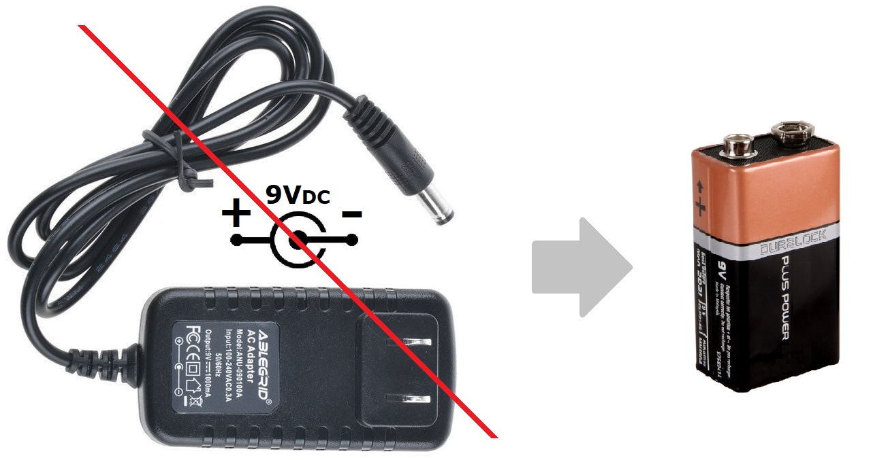

The 1966 Dallas Arbitrer Fuzz Face has become the holy grail of Fuzz tones. It enjoys the most enduring reputation probably due to Jimi Hendrix use and abuse of this pedal. But not all the Fuzz Faces sound the same, in the old days, players sorted through dozens of pedals at a time to find the best sounding fuzz of the store. Why is that?
In this project, we are going to build the perfect Fuzz with all the knowledge and experience that we have nowadays while keeping the tweaks and old character that make this vintage pedal to sound warm, round, and harmonically pleasant.
The FF circuit is rather simple: 4 resistors, 3 caps, and 2 transistors. Seems like pretty simple stuff, and in principle it is, but there is plenty of black magic and mystery associated with a good sounding Fuzz circuit, and it takes a lot of effort to get the things sounding just right.
The gain (Hfe) and leakage current inconsistency of the germanium transistors (the sound signature of this pedal) and the lack of ability/will to use the right components could make a huge impact on the tonal heart. The circuit layout in a pedal with a huge gain like this is critical and the component selection will leave its footprint on the sound.
The ElectroSmash Germanium Fuzz Pedal:
Compiling all the knowledge and experience that we have nowadays about the Fuzz Face, we have designed this project that tries to bring the good old classic fuzz tone using modern and controlled technologies:
Specifications:
- NOS Factory sealed Russian Germanium Transistors from the USSR era: with reasonable high-gain (Hfe>60) and super-low leakage current.
- Turret Board construction on the signal path: timeless vintage construction method; reliable and serviceable.
- True Bypass: The effect pedal gets completely disconnected from the signal chain once is deactivated.
- 2 multi-turn Burns trimmer resistors to set the collector voltages on the input and output transistors: Allowing to set the perfect bias for the circuit.
- 1/2W Carbon composite resistors: Same as the ones used in the original 1966 model.
- Alpha potentiometers: Using reverse audio for the Fuzz control that gives extra control to the user.
- Big power supply capacitor (470uF) with low ESR: removes all possible noise from the power supply.
- Red high-brightness/low current LED that makes the total current consumption of the pedal 2.5mA.
- Reverse polarity diode: prevents battery reverse polarity damage.
- Top quality audio-grade components (2.2uF film input capacitor, Neutrik jacks, Bourn trimmers, Alpha pots, Wurth caps, axial components, etc)
- Input jack used as a switch to power the pedal on.
- Quality PCB: 1.6mm FR4 printed circuit board with plated pads for easy soldering.
The circuit schematic and Bill of Materials are available and open to modifications.
The Circuit:
The circuit follows the original Fuzz Face (positive ground) signal path design:
The pedal uses a double PNP transistor stage and a feedback network. The only two differences with the original circuit are:
- Two multi-turn resistor trimmers (Trimmer1 and Trimmer2) replace fixed resistors so the bias could be adjusted to the perfect level.
- Two optional Miller caps (Cx) are included to reduce any possible HF noise.
We ensure that the signal path is the same as in the 1966 FF vintage pedal. All the other features (true bypass, LED, quality components, polarity protection, turrets, power supply capacitor, etc) will not change the sound of it and enhance the quality and performance of the pedal.
If you want to know all the details about the circuit, have a look at the Fuzz Face Analysis.
Measurements:
The Germanium Fuzz total voltage gain is around 48dB matching the simulation. The pedal response has a low-frequency roll-off around 50Hz due to the two high-pass filters created by C1 and the Input Impedance and the combination of C3&RV2. There isn't any low pass filter in the circuit: in the treble side of the frequency response, the line extends flat to the limits of the measuring system. Not attenuating the high-freqs makes this pedal so rich harmonically, in the left image you can see all this harmonics when the pedal clips.
Time Response:
In the image below you can check how the Germanium Fuzz reacts to a sinusoidal input signal. It's interesting to see how the asymmetrical happens hapens first to the positive semicycle of the signal and how extremely distorted can get the fuzz output signal.
note: In the beginning is difficult to apreciate the change in the input signal because the level is so low that the oscilloscope cannot capture the amplitude change.
The Documentation:
We have created simple manuals to build this project:
- Full Schematic PDF (including footswitch, jacks, etc)
- How to Build a Germanium Fuzz PDF document, explaining all the details and tricks of this pedal.
- Germanium Fuzz 1590B Drilling Stencil.
- Germanium Fuzz Face Bill of Materials. With all the Mouser references.
- Germanium Fuzz PCB Plan.
We also have a YouTube video that guides you during the whole building process:
Buying the Germanium Fuzz Pedal online:
You can use our online shop to get:
- The PCB: As the BOM and all the documents are available you can get the parts and DIY (you can also order NOS USSR Germanium Transistors).
- The Full Kit: The complete BOM and the drilled enclosure is included, you only need soldering iron and basic tools.
The Design Details:
- Only using a 9V battery, no external power supply: The original Fuzz Face using PNP transistors uses "positive ground" that means that the input and output jack are referenced to 9V (instead of ground). You can plug it to your pedalboard or amp without any problems BUT if you use a daisy chain or non-isolated power supply to power it, they will create a short. The best way to avoid conflicts is just to use a 9V battery, the low power consumption of this effect (2.5mA) will make your battery last for very long.

Note: The original fuzz uses carbon-zinc battery (not modern alkaline) and it is claimed to give a better sound performance.
- Tips How to Play a Fuzz Face: The logical thinking is that maxing the guitar volume knob and the pedal Fuzz and Vol controls will give the maximum distortion, BUT the Fuzz pedal is quite unique and the volume knob of the guitar plays a very important role in this effects. Controlling the volume from the guitar can make the final tone from subtle crunch (10% guitar vol knob) to overload fuzz (90% guitar vol knob).
- Hiss/Noise: When the Fuzz Face is maxed (Vol and Fuzz controls to 100%) some noise is unavoidable for germanium Fuzz Faces. The circuit itself has a tremendous amount of gain and the vintage parts used have some "character" or inherent noise. Usually, the noisiest pedals are the ones that sound best.
However, in order to reduce any excess of unwanted noise, two optional 100pF Miller capacitors (Cx) from base-to-collector on both transistors could be placed. This caps will limit the high-frequency response of the pedal and keep under control the hissing noise.
Germanium Transistor Selection - Biasing the Fuzz Face:
It is crucial to select the right transistors in order to archive the best sounding box. Germanium transistors tend to have high leakage current and an inconsistent gain value (Hfe). After years of experimentation and listening, it is agreed that the best match uses a low gain in the first stage (Hfe=80 approx.) and a high gain in the second stage (Hfe=120 approx.). Why is this? well if you use this values, the circuit bias points will look like this:
- Problem: The Original Situation:
On the left image, the most important bias points are VC1=-0.5 to -0.7v and VC2=-4.5V, these values make the effect to sound fantastic. Using a Q1 and Q2 with the gains specified on the left image, the circuit will be biased to that points.
As we mentioned before, theses perfect AC128 120/80 Hfe transistors were long time discontinued. There is no source for them anymore and the only solution for builders is to pay astronomical prices for NOS, to buy big batches of similar transistors and try to find if it any left that meets the requirements, and try to avoid the re-labeled, fakes in that journey.
- The Solution:
Instead of using the perfect and difficult-to-find transistors to get the circuit biased right, we can use almost any high-gain germanium PNP transistor (Hfe>50) and with the help of 2 trimmer resistors get the circuit perfect biased (right image). By doing this, we will create the same conditions for the transistors as if they were the perfect ones. Dunlop discovers this fact later on and includes a trimmer on VC2 in order to adjust it to -4.5V.
The Fuzz Face Transistors:
The first FF's manufactured in the UK used the AC128, a 45-165 Hfe European germanium PNP transistor, cheap/common at that time (later on replaced by the Newmarket NKT275). After this early germanium years, the production switched to the modern, temperature independent, and more stable silicon transistors like the BC108C, BC109C, and BC209C.
The classic 60's/70's soft distortion Fuzz Face pedals (the ones used by Jimi Hendrix) used germanium transistors, but all the parts mentioned above (AC128, NKT275, SFT363E) were a long time ago discontinued. There is no official source of transistors for this pedal anymore, the only way to obtain this parts is using specific online suppliers (Smallbear, etc), eBay, Amazon, repair shops, and surplus outlets.
Russian Germanium Transistors: For this project, we are going to use Germanium PNP transistors. They were manufactured back in the old USSR Soviet days, they are under military specifications that make them good, with a consistent gain and not leaky in current.
Other 1966 Original Electronic Components Peculiarities:
The parts used back in the 60s keep part of the character of the pedal, these are the most important facts:
- The Fuzz Face Caps: The original FF uses standard aluminum electrolytic capacitors for the 2.2uF and 20uF values and a film for the 10nF cap. They are common technologies still easy to find nowadays.
- The Fuzz Face Resistors: The original models use 1/2W carbon film resistors. This kind of resistors was extensively used on vintage audio equipment. They are not used anymore because they are considered noisy compared to the modern metal-film resistors. Many people think that original carbon resistors carry part of the organic fuzz distortion sound.
- The Potentiometers: The 1K linear "Fuzz" pot that was standard issue for the original Fuzz Face. This potentiometer put almost all the action into the last 25% of the rotation. Using a reverse audio pot (instead of linear) will spread out the change in clipping level over much more of the rotation. You get a lot more subtlety of control.
- The PCB: The original PCB from the 60s uses a single layer printed circuit board, will all the components placed on one side while the tracks run over the bottom. All the pots and jack are soldered to one of the sides of the board. It was the simpler and cheaper way to produce a PCB at that time.
Thanks for reading, all feedback is appreciated This email address is being protected from spambots. You need JavaScript enabled to view it.


{kind=link}
{kind=link}
{kind=link}
{kind=link}
{kind=link}
{kind=link}
{kind=link}
{kind=link}
{kind=link}
{kind=link}
{kind=link}